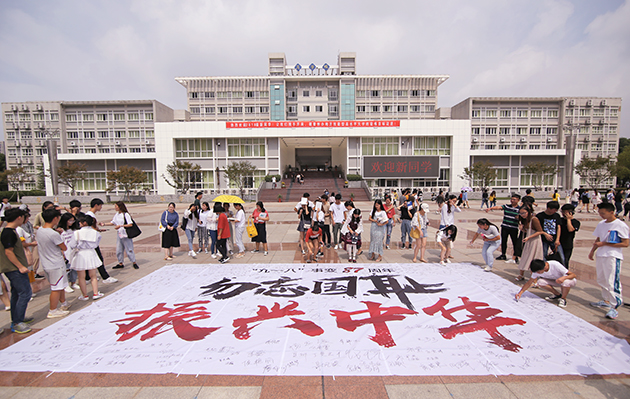

87年前，震惊中外的“九一八”事变爆发，9月18日，学校举行活动纪念“九一八”事变87周年，激励广大师生铭记历史、勿忘国耻，理性报国、振兴中华。
迎着中午的烈日，来自校学生会、社团联合会、艺术团和广播台的学生干部们在学校国旗台前铺开活动条幅，条幅上“勿忘国耻、振兴中华”的标语庄严肃穆，路过的老师和同学们被现场的气氛打动，纷纷驻足签名，当天的活动有千余名师生的参与。得到了芜湖《大江晚报》的关注和报道。
“距离‘九一八’事变已经过去了87年，这段漫长而沉重的历史提醒我们，和平来之不易。活动现场的同学们痛斥87年前日本帝国主义对华野蛮侵略行径，纷纷表示，要牢记历史，不忘国耻，汲取“落后就要挨打”的历史教训，将爱国热情转化为学习动力。